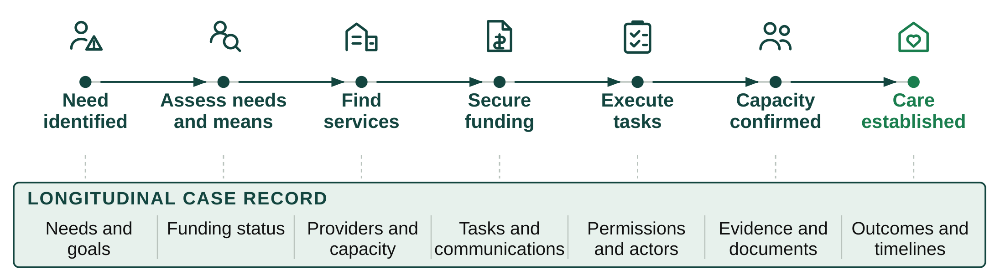
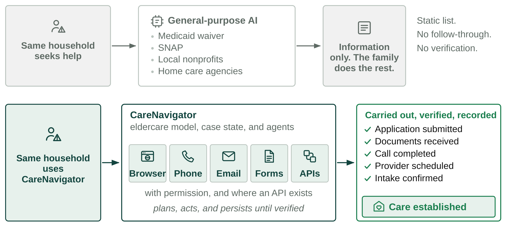
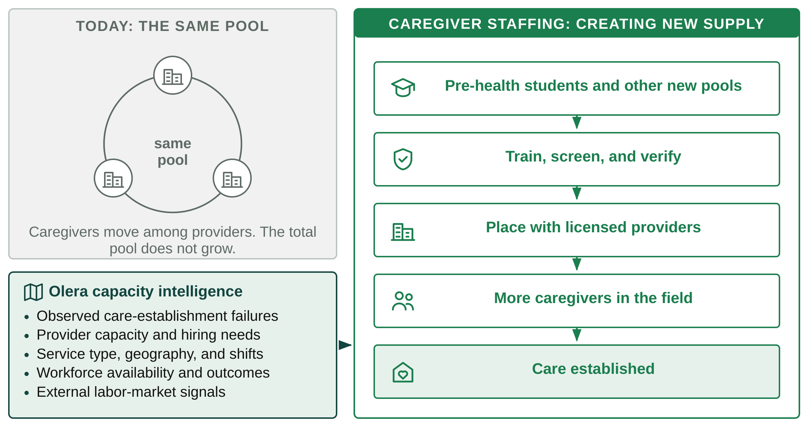
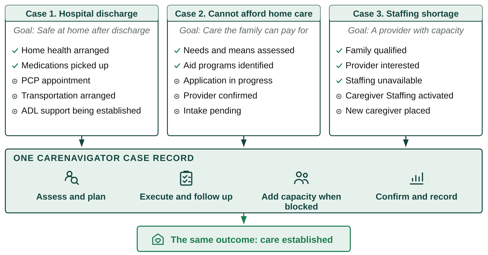

Key Innovation 1: making the care-establishment pathway computable. Existing systems capture resources, eligibility, referrals, or utilization in isolation, leaving the pathway from recognized need to established care poorly observed and difficult to compute. Olera has already modeled the early pathway states through Phase I–IIB: needs and means, available benefits and aid, and relevant providers. The CRP extends this foundation by turning real-world events along the full care-establishment pathway into persistent, longitudinal state, so the entire journey can be computed, tracked, and learned from. As the family moves through the eldercare ecosystem, CareNavigator records events, tasks, responses, and outcomes, updating the case state at each step (Figure 1). This longitudinal record is the foundation the other two innovations stand on: AI execution that can act on the right next step, and capacity intelligence that detects when workforce shortages are blocking care.

Figure 1. Real-world events along the care-establishment pathway become persistent, computable state.
Key Innovation 2: AI agents that execute the care-establishment pathway. Families still perform much of the administrative work required to make care actually begin. CareNavigator advances from planning what should happen to executing what must happen. Using the longitudinal case state, our agents plan the next action, use the appropriate tools, interact across real-world channels, and persist until outcomes are verified (Figure 2).

Figure 2. From information to execution. CareNavigator agents work real-world channels, persist across time, and verify that each step actually completed.
Key Innovation 3: creating caregiver capacity where the pathway fails. Execution reveals capacity failures when no provider can staff the needed care. Conventional channels recycle the same limited caregiver pool. Caregiver Staffing creates new workforce supply and directs it to the places where families are being blocked (Figure 3). We launch with pre-health students, a large and well-aligned population seeking patient-care experience; in our pilot this approach already attracted more than 900 applicants. We recruit through universities, pre-health organizations, career centers, and digital outreach. The same infrastructure will expand to other new labor pools, such as students in health-related fields, career changers, and trained workers not currently in direct care.

Figure 3. From redistributing the same workforce to creating new capacity, directed to where the pathway is failing.
The end product: the CareNavigator experience. To families, these innovations appear as one system. Through the web and mobile experience, families see what is needed, what CareNavigator is doing, what is pending, what requires their approval, and whether care has been established. The same platform carries very different real-world cases across the eldercare ecosystem to the same endpoint (Figure 4).

Figure 4. One platform, different paths, the same outcome: care established.